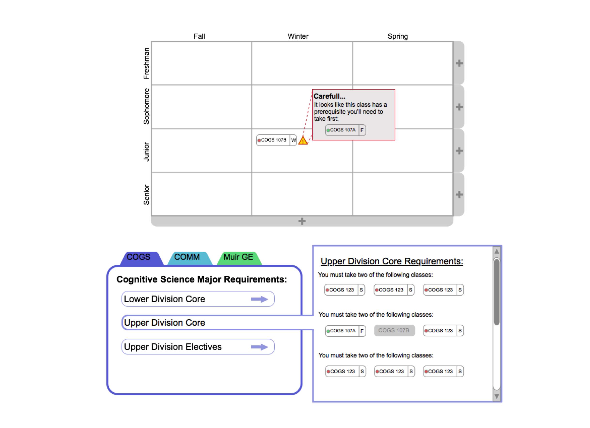
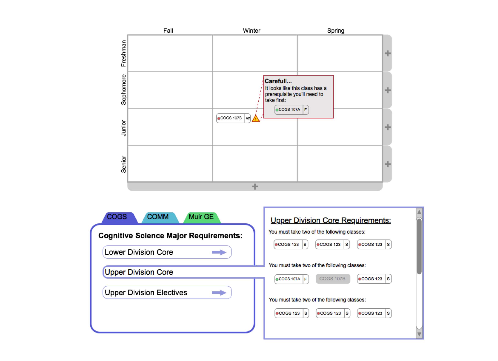

4 Year Academic Planner
01. Problem Space
How might we empower students to have greater agency over their academic careers and graduate within four years?
In the course of ten weeks, myself and 3 others sought to improve the UC San Diego student experience by redesigning the 4 year planner - a tool for students to map out coursework and stay on track to graduate in 4 years.
02. Research
Using a combination of interviews, surveys, and competitive analysis, we gained insight into students patterns, frustrations, and goals. Throughout our initial interviews, we heard students repeatedly express sentiments like this one: "Four year plans are difficult to make, but they give me a sense of security." With findings like this, we knew we had uncovered a problem space, so we proceeded to collect data.
Emergent Questions:
- What challenges do students face in making 4 year plans?
- What information is required to make a 4 year plan?
- What are current methods and tools for students to make a 4 year plan?
03. Design Objectives + Challenges
Through our needfinding process, we came up with a few design goals:
Challenge: Students need to keep track of course requirements and prerequisites. In data collection, we found that keeping track of course requirements across many categories (such as their major, minor, electives, and general education) presents a challenge for most students. How could we consolidate all this information into a digestible format? Additionally, many courses are prerequisite courses that must be taken beforehand. If a student mistakenly plans on taking a course they haven't fulfilled the prerequisite for, it can set them back an entire year. How might we prevent that from happening?
Challenge: Flexibility in planning is imperative.We found that students are constantly changing their 4 year plans. But the current tool for making a 4 year plan provided by the school has zero flexibility. How do we make changing a plan simple?
Challenge: Planning requires knowing which classes will be offered and when they will be offered.
Some classes are offered ever quarter, others only once a year. Students need to know which classes are offered and when so that they can plan accordingly.
04. Prototyping
We put our paper prototypes in front of people and probed them with questions to check for understanding. After collecting their feedback and a few design iterations, we developed medium fidelity clickable prototypes with Invision. Finally, we tested the effectiveness of our design by giving the users a task to accomplish on our prototype and observing how they went about doing it.
 
